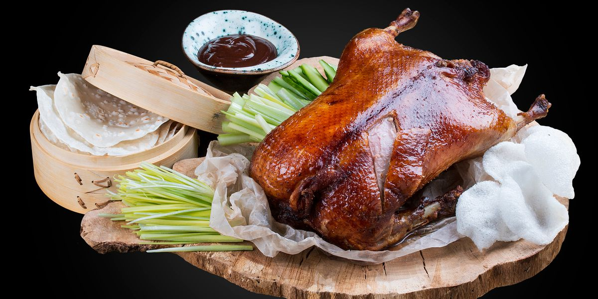

| Peking Duck（北京烤鸭） |
|  |
| Peking Duck is a famous dish from Beijing, enjoying world fame, and considered as one of China’s national dishes. Peking duck is savored for its thin and crispy skin. The Sliced Peking duck is often eaten with pancakes, sweet bean sauce, or soy with mashed garlic. It is a must-taste dish in Beijing! |